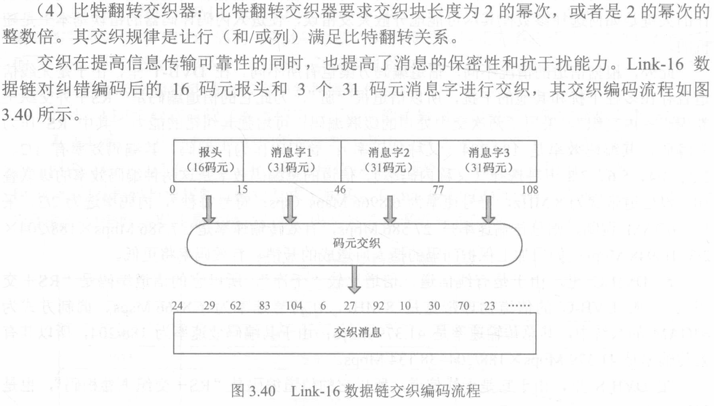
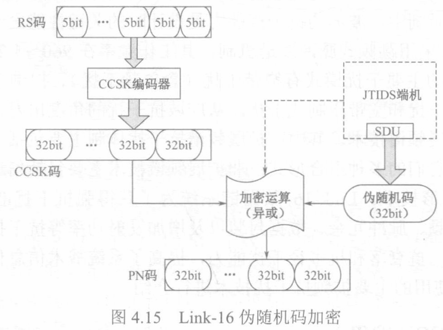
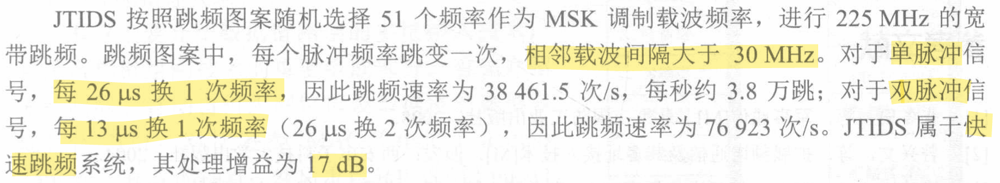
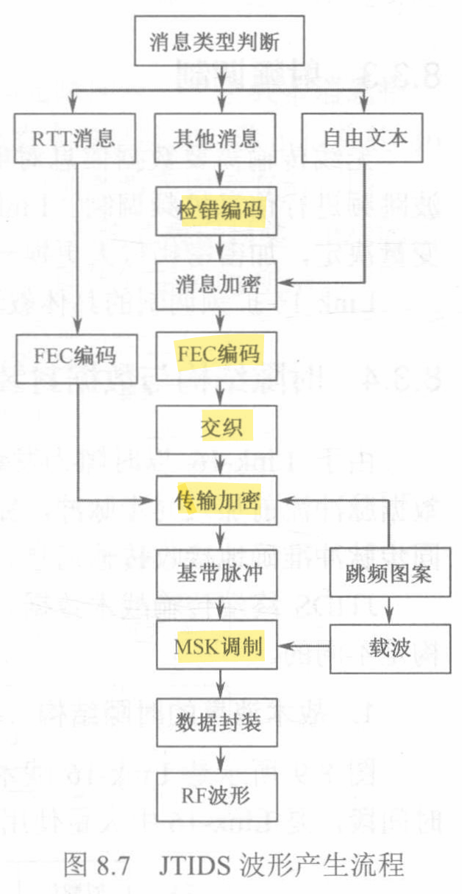
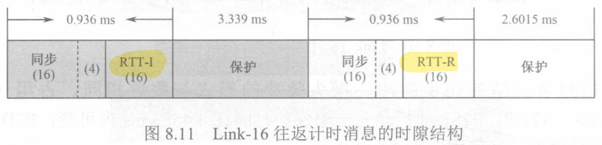
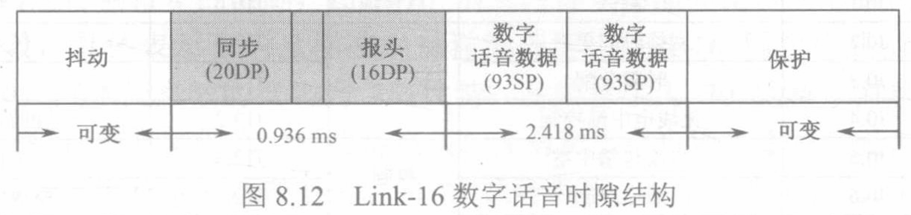
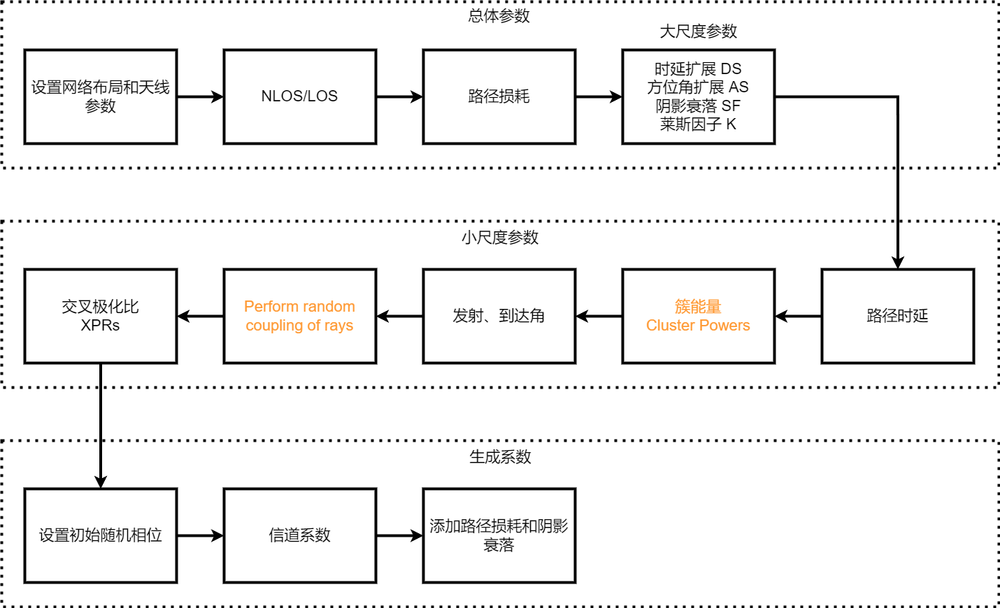
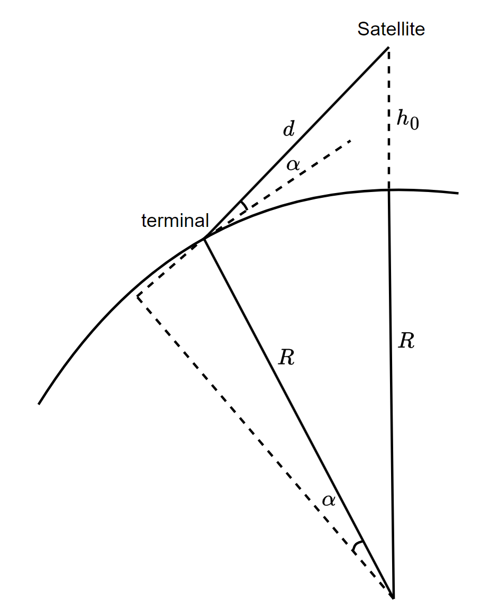

RIS综述
1. 智能超表面技术研究报告
智能超表面技术研究报告
第一章 概述
第二章 基础原理与模型
MIMO-OFDM无线通信技术及MATLAB实现
第一章 无线信道：传播和衰落
瑞利信道
Page 18
莱斯信道
第九章 MIMO信道容量
- Aα=λα
Aα−λα=0
(A−λ×E)×α=0
- α不为零向量，λ可以为0
- 求特征值：∣A−λE∣=0
视频
H=UΣVT
U,V是酉矩阵，UTU=I
则对于任意m×n（不妨m>n）的矩阵A：
-
联合高斯
fX(x)=(2π)2ndet21(C)1e−21(x−m)TC−1(x−m)
-
高斯分布的微分熵
H[x]=ln[(2πe)2k∣Σ∣21]
其中Σ为协方差矩阵。上式与式(9.17.1)类似
（链接的协方差后一项少了共轭）
确定性MIMO的信道容量
通用式为(9.19)
C=Tr(Rxx)=NTxmaxlog2det(INxx+NTxN0ExHRxxHT)bps/Hz
-
收发均知道CSI（这里即信道H）
收发端通过UTHV使接收信号为对角阵Σ，式(9.19)变为式(9.20)。
- 可以使用优化算法求得最优的信道容量对应的功率分配。
-
收知道CSI，发不知道
- 发端对各天线平均分配功率
- 收端用特征值分解，见式(9.31)
数据链
第3章

第4章 抗干扰技术
概述
-
分类
{窄带干扰宽带干扰
-
处理增益
噪声系数的倒数
Gp=(S/N)i(S/N)o=Si/(n0Bi)So/(n0Bo)=Bi/Bo
Bi是跳频能覆盖的总频率带宽，Bo是跳频的瞬时带宽。
-
干扰容限（即扩频带来的“好处”）
Mj(dB)=Gp−[LS+(S/N)out]
Ls为解扩固有处理损耗LS+(S/N)out为接收机的最低解调信噪比；纠错编码可以降低最低解调信噪比，从而增加干扰容限；跳频的频率数即跳频的处理增益。
扩频技术
四种基本扩谱方式⎩⎨⎧直接序列扩谱 DSSS：抗单频、远近干扰（同频大功率码淹没小功率码）差跳频扩谱 FHSS：抗宽带、中继干扰差跳时扩谱 THSS调频扩谱 Chirp SS
混合扩谱：降低工程实现难度，优势互补⎩⎨⎧FH/DSDS/ChirpTH/DSTH/FH
Link16 数据链的扩频抗干扰
-
软扩频（CCSK编码）
32个32位循环码，表示5bit信息

-
跳频
载波频率间隔3MHz，共51个频点

- 跳时
第8章 link 16

帧格式
- 战术消息
- 往返计时消息

- 自由文本消息

地球-空间信道
总体生成步骤

传输距离计算

（注意terminal处左下虚线与右上实线在同一直线上，而非左下左上的虚线）
考虑最大的这个直角三角形，由勾股定理：
(d+Rsinα)2+R2cos2α=(R+h0)2
将cos项替换掉
(d+Rsinα)2+R2(1−sin2α)=(R+h0)2
d=h02+2h0+R2sin2α−Rsinα(1)
路径损耗
Passloss(PL)=PLbasic+PLgasses+PLs+PLentry
其中PLbasic是基础的路径损耗，PLgasses是云、雨、雾导致的损耗，PLs是电离层和对流层导致的衰减，PLentry是室内情境下建筑导致的损耗。
基本路径损耗
PLbasic=FSPL(d,fc)+SF(Shadow Fading)+CL(α,fc)(Clutter Loss)
二者可以查表得到
- 自由空间路径损耗
-
路径长度d由式(1)计算
-
自由空间路径损耗（free space path loss，FSPL）推导
假设发射点发射球面波，球面到接收机的大小为4πd2，接收点有效面积为4πλ2（见《天线》P22、公式来源、基尔霍夫衍射积分公式）（死去的电磁场开始攻击我）
FSPL=PtransmitPrecieve=λ2(4πd)2=c2(4πdf)2
FSPL(dB)=20lg34π+20lgd(km)+20lgf(MHz)+20lg10=32.45+20lgd(km)+20lgf(MHz)=92.45+20lgd(m)+20lgf(MHz)